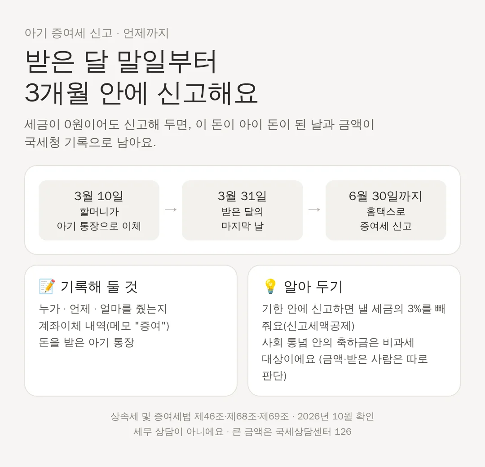

아기 증여세 신고, 세금 0원이어도 하는 이유와 신고 기한
공제 안이라 낼 세금이 없으면 신고를 안 해도 될까요? 낼 세금이 없으면 신고하지 않았다고 따로 벌금이 붙지는 않아요. 그래도 신고해 두면 '이 돈이 언제부터 아이 돈이었는지'가 국세청 기록으로 남아요.
📌 3줄 요약
- 증여세 신고 기한은 받은 날이 속한 달의 마지막 날부터 3개월 안이에요.
- 기한 안에 신고하면 낼 세금의 3%를 빼 줘요.
- 세금이 0원이어도 신고해 두면 나중에 돈의 출처를 기록으로 보여 줄 수 있어요.
신고 기한: 받은 달 말일부터 3개월

상속세 및 증여세법 제68조는 증여받은 날이 속하는 달의 말일부터 3개월 안에 신고하라고 정해요. 3월 10일에 할머니가 아기 통장으로 보냈다면 3월 31일부터 세어 6월 30일까지예요. 마지막 날이 토요일이나 공휴일이면 그다음 날까지 할 수 있어요. 신고는 돈을 받은 사람, 즉 아이 이름으로 해요. 아이가 어리면 부모가 대신 해요.
기한 안에 하면 3%를 빼 줘요
기한 안에 스스로 신고하면 낼 세금(산출세액)의 3%를 빼 줘요(법 제69조). 예를 들어 세금이 100만 원이면 3만 원이 줄어요. 기한이 지나도 세무서가 세금을 정해서 알려 주기 전이면 '기한 후 신고'를 할 수 있어요. 다만 이때는 3% 공제가 없고, 낼 세금이 있었다면 가산세가 붙을 수 있어요.
세금 0원인데 왜 신고할까요?
공제 안이라 낼 세금이 없으면 신고하지 않아도 가산세가 붙을 세금이 없어요. 그런데도 신고하는 집이 많아요. 신고서에 누가, 언제, 얼마를 줬는지가 남기 때문이에요. 아이가 커서 그 돈으로 집을 사거나 큰돈을 쓸 때 '이 돈은 어디서 났어요?'라는 질문(자금 출처)을 받을 수 있어요. 그때 신고 기록과 계좌이체 내역이 있으면 설명이 쉬워져요. 이 부분은 법에 적힌 의무가 아니라 기록을 남기는 방법으로 정리한 거예요.
신고 전에 기록해 둘 것
돈은 현금보다 계좌이체로 주고, 이체 메모에 '증여'라고 적어 두세요. 누가, 언제, 얼마를 줬는지 따로 적어 두면 신고할 때 편해요. 세금을 매기지 않는 아주 작은 금액도 있어요. 과세표준이 50만 원 미만이면 증여세를 매기지 않아요(법 제55조). 신고는 국세청 홈택스에서 온라인으로 하거나 세무서에서 할 수 있어요.
신고한 뒤에 늘어난 돈은요?
신고하고 아이 통장에 들어간 돈은 아이 재산이에요. 그 돈을 아이 이름 적금이나 펀드에 넣어 이자나 수익이 붙어도, 일반적인 이자·수익 자체를 다시 증여로 신고하라는 조문은 확인하지 못했어요. 다만 부모가 아이 계좌를 자기 돈처럼 넣었다 뺐다 하면 아이 재산으로 보기 어려울 수 있어요. 아이 통장은 아이 돈만 들어가고 나가게 두는 게 안전해요.
⚠️ 세무 상담이 아니에요. 2026년 10월에 검색으로 확인한 법 조문을 쉽게 옮긴 것이에요. 홈택스 메뉴 이름과 화면은 바뀔 수 있어서 적지 않았어요. 신고 방법이 헷갈리면 국세상담센터(126)에 물어보세요.
📚 출처
📄 상속세 및 증여세법
법제처 국가법령정보센터 · 제46조·제47조·제53조·제53조의2·제55조·제57조·제68조·제69조
👤 누가 쓴 자료예요? 국회가 만든 법률을 법제처가 원문 그대로 공개하는 곳이에요. 증여세를 매기기 전에 빼 주는 금액(증여재산공제), 조부모 할증, 신고 기한이 이 법에 적혀 있어요.
📄 상속세 및 증여세법 시행령
법제처 국가법령정보센터 · 제35조(비과세되는 증여재산의 범위 등)·제46조의3
👤 누가 쓴 자료예요? 법률을 실제로 적용하는 자세한 기준을 정한 대통령령이에요. 축하금처럼 세금을 매기지 않는 돈의 범위가 여기 있어요.
🔎 자료에 적힌 내용만 옮겼어요 · 자료를 고르고 옮기는 방법